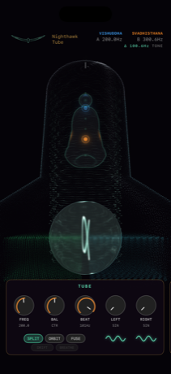
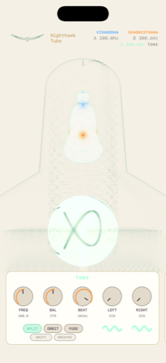
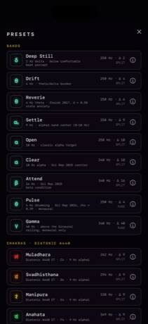
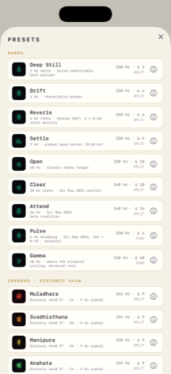
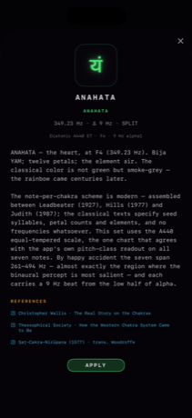
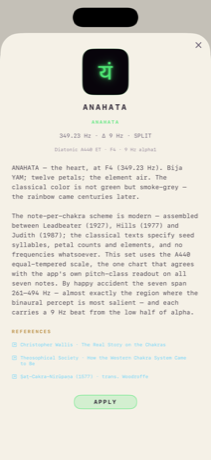
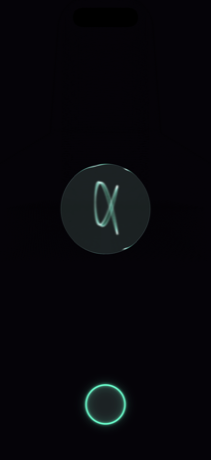
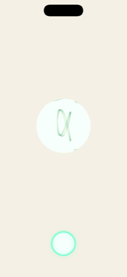

A stereo oscillator meditation instrument.
two tones · one tube · the beat between them
Nighthawk Tube is two audio oscillators, one panned to each ear, meeting inside a glowing vacuum tube rendered entirely in particles. Their waveforms pour across the glass floor, sum into a slowly rotating interference drum, and trace a live Lissajous figure in phosphor blue-green. Turn a knob and the sound and the picture move together.
No presets to hunt, no menus. A single tube, a small brass-and-ebonite rack, and a figure seated inside the glass. Set a tone, set a timer, and watch it breathe.
The visuals aren't decoration. Each mote of light on the glass is a real oscillator sample; the interference you watch is the beat you feel.
It makes sound and light and nothing else. No account, no network, no analytics, no data collected. Read the privacy policy.
The instrument follows your device's appearance. Dark is the original violet-ray void, the tube glowing in near-black. Light inverts the phosphor into deep green ink on warm paper, for when an open, bright space suits the sit better than a dark one.








A beat is the interference between two nearby tones. Play a note in one ear and a slightly different note in the other, and your auditory system fuses them and hears a third, slower pulse, the binaural beat, throbbing at exactly the difference between the two frequencies.
The perceived beat is the difference: Δ = | freqB − freqA | hertz.
You steer it with two knobs on the TUBE chassis. FREQ sets the base pitch (30 Hz–1.5 kHz, logarithmic); BEAT dials the difference tone directly, from half a hertz of shimmer up to a 120 Hz snarl on one logarithmic sweep, and holds it while FREQ moves, so the rhythm you chose survives any carrier you sweep to:
Each oscillator has its own wave morph, sine → triangle → sawtooth → pulse, its trace drawn live beneath the dial. And the BEAM switch chooses what kind of beat you're inside: SPLIT is the classic binaural pair, one tone per ear, headphones on. FUSE sums both tones into both ears: a monaural beat, a real physical pulse that works on speakers. ORBIT sweeps continuously between the two as the scope turns, and its BREATHE tempo paces that orbit at six breaths a minute, a breath pacer you don't have to watch. Why the distinction matters →
As you turn BEAT, Nighthawk Tube reads the beat frequency back to you and labels it with the EEG band that same rhythm sits in, the brainwave rate a steady pulse at that speed aligns with. Slower toward sleep, faster toward alertness; past gamma it's simply an audible tone.
| Band | Beat rate | State it names |
|---|---|---|
| STILL | < 0.5 Hz | The two tones all but locked: a held drone, almost no beat. |
| DELTA | 0.5 – 4 Hz | The slowest rhythm: deep, dreamless sleep and stillness. |
| THETA | 4 – 8 Hz | Drowsy, dreamlike, the drifting edge of deep meditation. |
| ALPHA | 8 – 12 Hz | Calm, relaxed alertness: eyes-closed ease, unforced attention. |
| BETA | 12 – 30 Hz | Awake and engaged: ordinary focused, thinking wakefulness. |
| GAMMA | 30 – 100 Hz | The fast band: heightened, binding, keen concentration. |
| TONE | > 100 Hz | Past entrainment. No longer a rhythm, just a low difference tone. |
Nighthawk Tube is an instrument for listening and calm focus, not a medical or therapeutic device. The band labels describe the frequency of the beat, not a promised effect.
Seated inside the tube is a figure in phosphor line-art: the subtle body, its seven chakras marked along the spine. Each oscillator's pitch is read to its nearest note, and the traditional seven-note mapping (C at the root, up to B at the crown) lights the chakra that note belongs to. Two oscillators, so two centres glow at once in their own colour while the rest rest dim in the tube's green. Change the tone and the light climbs or falls along the spine.
Nothing in the preset drawer is folklore without a citation. Each patch carries a neon sign, a provenance line, and a page of lore with live links to its sources: the studies, the primary texts, the arithmetic.
Nine rhythms from a 2 Hz felt-not-heard delta to a 40 Hz monaural gamma, on carriers the psychoacoustics actually favors. Each names the study its numbers came from.
The seven-note scale, C at the root, the one chart the app's own pitch readout agrees with, 7 for 7. Each preset wears its bija syllable in neon and carries a 9 Hz beat.
Orbital periods octave-doubled into hearing: the Earth's day, the Moon's month, the year at 136.10 Hz. Real arithmetic, planetary signs in neon, chakras declared honestly.
Everything lives on one small rack under the tube: near-black panels edged in dim brass, a whisper of velvet violet under the lacquer, monospace legends. Four modules, no patch cords.
Nighthawk Tube plays free 5-minute demo sessions, a few times a day, long enough to find a tone and watch the figure light. A single $2.99 purchase unlocks Pro: the full session timer and the preset library, forever. No subscription, ever.